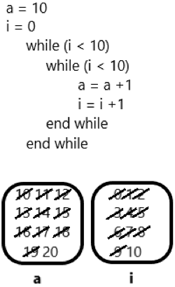
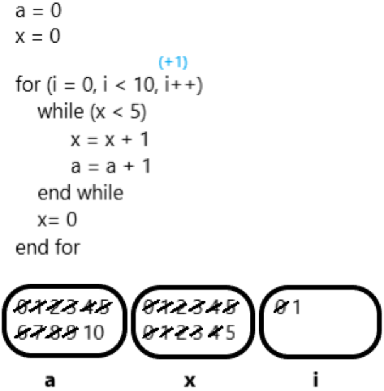

Teste prático para estágio GRX
1 - Sobre programação, marque a alternativa que representa linguagens de programação:
a) C#, Ruby, C, Java
b) Vb, Delphi, dotnet, C
c) Java, Rails, dotnet, C++
d) javascript, Eclipse, Java, VB.net
e) mysql, javascript, Delphi, VB
2 - Sobre programação, responda qual a alternativa correta:
I. IF, ELSE, CASE e FOR, WHILE são estruturas de repetição e decisão respectivamente
II. Uma classe é formada por atributos e métodos.
III. Para utilizar um método declarado como estático em uma determinada classe precisasse obrigatoriamente instanciar um objeto desta classe.
a) Apenas a I é verdadeira
b) Apenas a II é verdadeira
c) Apenas a III é verdadeiras
d) Apenas a II,III são verdadeiras
e) nenhuma é verdadeira
3 - Sobre programação, qual o valor de ‘a’? marque a alternativa correta:
a = 10
i = 0
while (i < 10)
while (i < 10)
a = a +1
i = i +1
end while
end while
a) 10
b) 20
c) 30
d) 40
e) 50
Anexar teste de mesa à resposta

4 - Sobre programação, qual o valor de ‘a’? marque a alternativa correta:
a = 0
x = 0
for (i = 0, i < 10, i++)
while (x < 5)
x = x + 1
a = a + 1
end while
x= 0
end for
a) 10
b) 20
c) 30
d) 40
e) 50
Anexar teste de mesa à resposta.

5 - Sobre programação, marque a alternativa correta:
x = 5
function calcula(x)
if x > 1
end
else
end
a = x - 1
return x * calcula(a)
return 1
imprimir calcula(x)
a) 100
b) 110
c) 120
d) 130
e) 140
Anexar teste de mesa à resposta.
6 - Sobre programação, responda como podemos classificar a lógica utilizada no algoritmo da questão 5
a) progressiva
b) aritmética
c) matemática
d) recursiva
e) refatorada
7 - O que consiste um CRUD?
Consiste em: criação, leitura, atualização e exclusão. Feito para operar banco de dados relacional.
8 - O que é front-end? Cite algumas linguagens pertencentes a esse grupo.
R: Front-End está relacionado com a interface gráfica do projeto, dentre elas: as cores, fontes, menus, imagens e entre outras funcionalidades. Ou seja, é onde desenvolve-se as aplicações no qual o usuário irá interagir de forma direta.
Exemplos de linguagens: Javascript, React, jQuery e Angular.
9 - O que é back-end? Cite algumas linguagens pertencentes a esse grupo.
O Back-End, seria tudo o que está por trás do site que de certa forma, o "usuário não consiga ver". É a área que armazena os dados sendo consumidos ou manipulados pelo aplicativos ou softwares.
Exemplos de linguagens: Python, Java, C#, PHP e Swift.
19 - O que é Git? Para que serve
R: O Git é um projeto de código aberto maduro e com manutenção ativa desenvolvido em 2005 por Linus Torvalds, o famoso criador do kernel do sistema operacional Linux. Um número impressionante de projetos de software depende do Git para controle de versão, incluindo projetos comerciais e de código-fonte aberto.